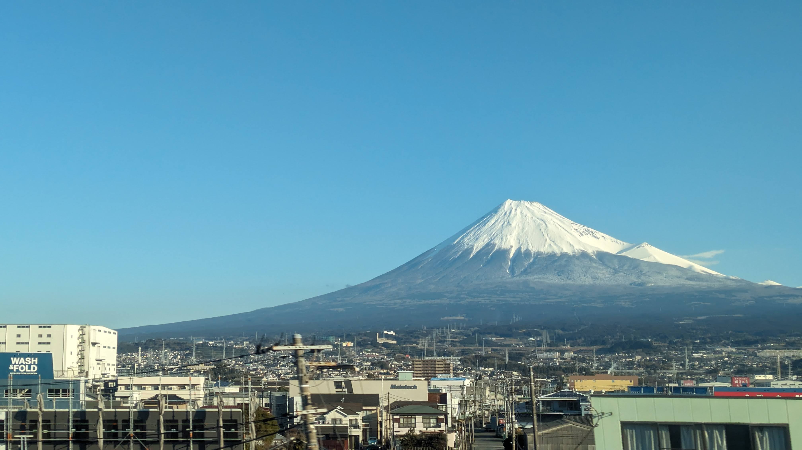
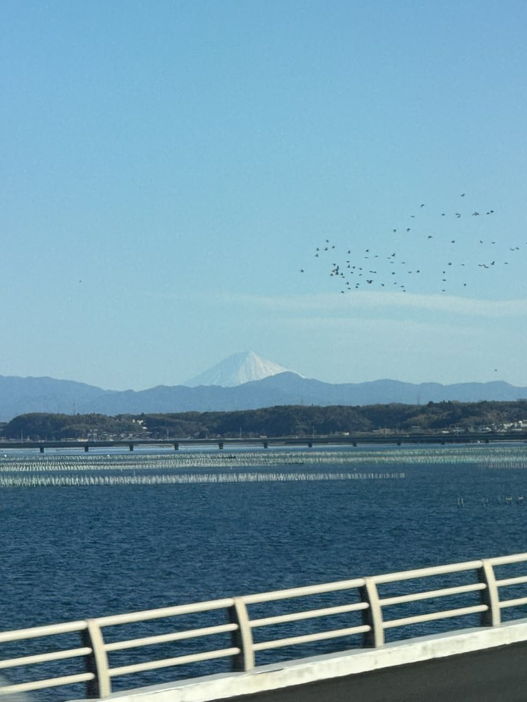

车窗气象
富士山可见度预报测试版
今天从新干线能看见富士山吗？比较5个观景区间的山顶云量与空气清晰度。选择列车、上车车站与方向，或输入出发时间，即可查看通过各区间时的天气条件。
新富士附近能看到富士山的概率
三岛至新富士 · E 座 · 距离富士山约 24 公里
查看所乘列车的预报选择列车或输入出发时间
从新干线欣赏富士山的5个区间
看到富士山的概率 · 06:00–19:00（日本时间）
大田的富士山 品川 → 新横滨（东京大田区）

望向东京屋顶後方，寻找远处小小的富士山。这里相距约95公里，需要格外清澈的空气才容易发现。它是旅程中富士山的第一个提示，与新富士附近的大景色截然不同。
查看照片与观景指南 →相模平原後方的富士山 新横滨→小田原

富士山出现在广阔的相模平野与丹泽山棱後方。平野、山麓与富士山层层重叠，与新富士附近的构图很不一样。冬季与初春乾燥的早晨，山的轮廓通常较清楚；雨後也可能带来惊喜。
查看照片与观景指南 →新富士附近的富士山 三岛→新富士

这是5个区间中距离最近的一处，富士山可能在车窗外展开约3至4分钟。山位於铁路北侧，白天的山坡通常能受到列车这一侧的阳光照射。冬季积雪的山顶与夏季几乎无雪的山，让同一段旅程呈现不同面貌。
查看照片与观景指南 →左侧的富士山 通过静冈站与安倍川後不久

这是5个区间中唯一的A座景色。往新大阪方向行驶时，通过静冈与安倍川後，铁路的弯道让富士山短暂出现在左手边。只有几秒钟，请提早留意窗外。积雪的山顶比夏季雾霭中的轮廓，更容易在建筑物之间辨认。
查看照片与观景指南 →滨名湖远处的富士山 滨松 → 丰桥

这是5个区间中距离最远的一处，富士山小小地浮现在湖泊与周边山丘後方。列车跨越滨名湖时，请从E座侧望向远处。必须有非常清澈的空气才能看见，是偶尔遇见的惊喜，不是每趟旅程都能期待的景色。
查看照片与观景指南 →以下5处景色依东京往新大阪的行进顺序排列。座位侧与距离对应各观景位置；从东京出发的时间为希望号、光号的大约值。请使用上方的列车选择功能，查询您所搭列车的通过时间。
今天从新干线看得到富士山吗？
能否看见富士山，主要取决於两个条件：山顶没有被云遮住，以及列车与山之间的空气足够清晰。上方工具会分别估算东海道新干线沿线5个观景区间的条件。
乾燥的冬季与初春，通常能看见最清晰的景色。潮湿的夏天，即使天空晴朗，雾霭仍可能遮住远方的山。雨後空气变得清澈时，夏天也偶尔能看见富士山。
远方的景色通常在早晨比下午更清晰。较晚时，山可能呈现剪影，而不是清楚的山坡细节。逐时预报可协助比较您通过前後的天气条件。
其中4个区间位於E座、靠山侧。往新大阪方向行驶时，通过静冈後短暂出现的「左富士」是唯一的例外，位於A座、靠海侧。如果富士山被云遮住，也可以看看 阴天也能享受的车窗景色.
预报模型测试版：可见机率＝山顶未被云遮住的机率×大气能见度达到有效观景距离的机率。视线会斜穿霾层向山顶延伸，因此有效距离比水平距离短；湿度越高，霾层越厚。气象数据来源： Open-Meteo 未满 CC BY 4.0 ，并换算为本站的机率估算。回溯比对车窗照片记录时，模型将10个成功拍摄日中的9个判定为可见。通过时间为希望号的约略估算。天气突然变化可能使预报不准确。阴天的观景点子，请参阅 富士山导览.